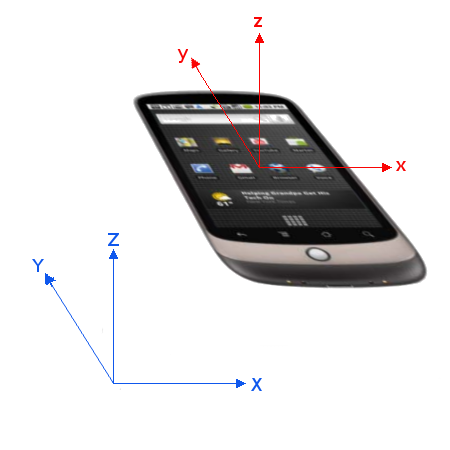
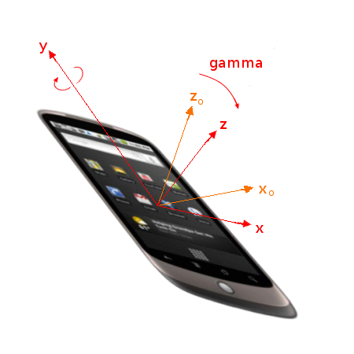

Getting to Know HTML5
Agenda
- Emergence of HTML5
- The Markup
- JavaScript & New APIs
- CSS
- Lucky Dogs
Emergence of HTML5
Rough Timeline of Web Technologies
- 1991 HTML
- 1994 HTML 2
- 1996 CSS 1 + JavaScript
- 1997 HTML 4
- 1998 CSS 2
- 2000 XHTML 1
- 2002 Tableless Web Design
- 2005 AJAX
- 2009 HTML 5
More: http://www.w3.org/html/wg/wiki/History
Emergence of HTML5
WHATWG
Web Hypertext Applications Technology Working Group
The Web Hypertext Application Technology Working Group (WHATWG) is a growing community of people interested in evolving the Web. It focuses primarily on the development of HTML and APIs needed for Web applications. The WHATWG was founded by individuals of Apple, the Mozilla Foundation, and Opera Software in 2004, after a W3C workshop. Apple, Mozilla and Opera were becoming increasingly concerned about the W3C’s direction with XHTML, lack of interest in HTML and apparent disregard for the needs of real-world authors. So, in response, these organisations set out with a mission to address these concerns and the Web Hypertext Application Technology Working Group was born.
Emergence of HTML5
What is the WHATWG working on?
The WHATWG's main focus is the HTML standard, which also includes Web Workers, Web Storage, the Web Sockets API, and Server-Sent Events. Occasionally, specifications outside WHATWG space are discussed on the WHATWG mailing list; recent examples include a crypto API, HTML editing APIs, and the UndoManager specification. In the past it has worked on Web Forms 2.0 and Web Controls 1.0. Web Forms 2.0 has been integrated into HTML5 and Web Controls 1.0 has been abandoned for now, awaiting what XBL 2.0 or its alternatives will bring us.
Emergence of HTML5
What is HTML5?
HTML is the main focus of the WHATWG community. HTML5 is a snapshot of HTML, which is being worked on by the WHATWG community and also the W3C HTML Working Group. HTML5 is a new version of HTML4, XHTML1, and DOM Level 2 HTML addressing many of the issues of those specifications while at the same time enhancing (X)HTML to more adequately address Web applications. Besides defining a markup language that can be written in both HTML and XML (XHTML) it also defines many APIs that form the basis of the Web architecture. Some of these APIs were known as "DOM Level 0" and were never documented before. Yet they are extremely important for browser vendors to support existing Web content and for authors to be able to build Web applications. Going forward, the WHATWG is just working on "HTML", without worrying about version numbers. When people talk about HTML5 in the context of the WHATWG, they usually mean just "the latest work on HTML", not necessarily a specific version.
Living Standards
Emergence of HTML5
WHATWG HTML Spec
Emergence of HTML5
W3C HTML Spec
The Markup
- Simplified Elements (DOCTYPE, Script, Stylesheet, Charset)
- More Semantical Elements
- More (Useful) Interactive Elements
- Video (eh...)
- Canvas!!!
The Markup - DOCTYPE
If you haven't realized: a DOCTYPE can be important
Previously:
<!DOCTYPE HTML PUBLIC "-//W3C//DTD HTML 4.01//EN"
"http://www.w3.org/TR/html4/strict.dtd">
<!DOCTYPE HTML PUBLIC "-//W3C//DTD HTML 4.01 Transitional//EN"
"http://www.w3.org/TR/html4/loose.dtd">
<!DOCTYPE html PUBLIC "-//W3C//DTD XHTML 1.0 Transitional//EN"
"http://www.w3.org/TR/xhtml1/DTD/xhtml1-transitional.dtd">
The Markup - DOCTYPE
As if life isn't Hard enough:
Quirks Mode
<!DOCTYPE html PUBLIC>
IE series:
<!-- This comment will put IE 6, 7, 8, and 9 in quirks mode -->
<!DOCTYPE HTML PUBLIC "-//W3C//DTD HTML 4.01//EN"
"http://www.w3.org/TR/html4/strict.dtd">
The Markup - DOCTYPE
Front End Engineering:

The Markup - DOCTYPE
Now:
<!DOCTYPE html>
<!DOCTYPE html lang="en">
The Markup - Script
Previously:
<script type="text/javascript">...</script>
<script type="text/javascript" language="JavaScript">...</script>
Now:
<script>...</script>
<script src="xxx.js"></script>
The Markup - Stylesheet
Previously:
<link rel="stylesheet" href="style-original.css" type="text/css" />
<link rel="stylesheet" href="style-original.css" type="text/css" media="screen"/>
Now:
<link rel="stylesheet" href="style-original.css" />
The Markup - Charset
Previously:
<meta http-equiv="Content-Type" content="text/html; charset=utf-8" />
Now:
<meta charset="utf-8" />
The Markup - More Semantical Elements
Think of composing a web page for displaying arbitrary articles
Previously:
<div class="header">......</div>
<span class="nav">......</span>
<div class="section summary">......</div>
<div class="article">......</div>
<div class="aside reference">......</div>
<div class="footer">......</div>
The Markup - More Semantical Elements
Now:
<header class="mytheme blog">......</header>
<nav class="blue-nested-menus">......</nav>
<section class="with-summary"><h1>xxx<h1>......</section>
<article class="blog technical-paper">......
<section class="subsec with-summary"><h2>yyy<h2>......</section>
</article>
<aside class="reference about-the-author">......</aside>
<footer class="thanks links">......</footer>
The Markup - More Semantical Elements
'Elements' but not just Tags
Did I mention Attributes?
- 'data-' family
- data-id
- data-role
- data-city
- data-food
- ...
- link 'rel's
- rel=”stylesheet”
- rel=”nofollow”
- rel=”alternate”
- rel=”author”
- rel=”first|prev|next|last”
- rel=”noreferrer”
- rel=”pingback”
- rel=”prefetch”
The Markup - More Semantical Elements
More (and coming):
<time>2011-11-27T16:54+0800</time>
<hgroup>
<h1>......</h1>
<h2>......</h2>
</hgroup>
<details>
<summary>Copying... <progress max="375505392" value="97543282"></progress> 25%</summary>
<dl>
<dt>Transfer rate:</dt> <dd>452KB/s</dd>
<dt>Local filename:</dt> <dd>/home/rpausch/raycd.m4v</dd>
<dt>Remote filename:</dt> <dd>/var/www/lectures/raycd.m4v</dd>
<dt>Duration:</dt> <dd>01:16:27</dd>
<dt>Color profile:</dt> <dd>SD (6-1-6)</dd>
<dt>Dimensions:</dt> <dd>320×240</dd>
</dl>
</details>
The Markup - More Semantical Elements
Microdata
What is Microdata?
Microdata is a WHATWG HTML specification used to nest semantics within existing content on web pages. Search engines, web crawlers, and browsers can extract and process Microdata from a web page and use it to provide a richer browsing experience for users. Microdata use a supporting vocabulary to describe an item and name-value pairs to assign values to its properties. Microdata helps technologies such as search engines and web crawlers better understand what information is contained in a web page, providing better search results. Microdata is an attempt to provide a simpler way of annotating HTML elements with machine readable tags than the similar approaches of using RDFa and Microformats.
The Markup - More Semantical Elements
Microdata: benefit?
The Markup - More Semantical Elements
Currently known Microformats
- People and Organizations: Person, Organization, hCard, XFN
- Calendars and Events: Event, hCalendar
- Opinions, Ratings and Reviews: Product, Review, Review-aggregate, VoteLinks, hReview
- etc.
- rel="license"
- rel="tag"
- rel="home"
- rel="enclouse"
- rel="payment"
- etc.
Usual Namespaces
- http://microformats.org/
- http://www.data-vocabulary.org/
The Markup - More Semantical Elements
Microdata - Example:
<section itemscope itemtype="http://data-vocabulary.org/Person">
Hello, my name is
<span itemprop="name">Jerome Jia</span>,
I am a
<span itemprop="title">Sr. Engineer</span>
at
<span itemprop="affiliation">Good Technology</span>.
I'm usually known as
<span itemprop="nickname">IUSR</span> on the internet.
You can visit my homepage at
<a href="http://blog.iusr.me" itemprop="url">blog.iusr.me</a>.
<section itemprop="address" itemscope itemtype="http://data-vocabulary.org/Address">
I work at
<span itemprop="street-address">309 Nanjing Road</span>
,
<span itemprop="locality">Nankai District</span>
,
<span itemprop="region">Tianjin, China</span>.
</section>
</section>
The Markup - More Semantical Elements
Microdata - Douban.com's Magical search result:
The Markup - More Semantical Elements
Microdata - Douban.com's Magical search result:
The Markup - More Semantical Elements
Microdata - Douban.com's Magical search result:
The Markup - More Semantical Elements
Why Making Web Pages Semantical So @Important?
The Markup - More Semantical Elements
Why Making Web Pages Semantical So @Important?
The Markup - More Interactive Elements
Mostly for tag "input"
- [placeholder] (also for
textarea) - [autofocus]
- [required]
- url
- number
- search
- range
- date, month, week, time, datetime, datetime-local
- color
The Markup - More Interactive Elements
Demo
Android, text input

Android, number input

The Markup - More Interactive Elements
Demo
iPhone, email input

iPhone, telephone number input

The Markup - More Interactive Elements
Demo
See it:
The Markup - More Interactive Elements
Other Controls
Interactive 'details'
<details>
<summary>HTML 5</summary>
This slide demonstrates the new "summary" tag.<br/>
This part is hidden by default.
</details>
<details open="true">
<summary>HTML 5</summary>
Unless its "open" attribute is set to "true".
</details>
HTML 5
This slide demonstrates the new "summary" tag.This part is hidden by default.
HTML 5
Unless its "open" attribute is set to"true".
The Markup - More Interactive Elements
Other Controls
A score bar
<meter min="0" max="100" low="40" high="80" optimum="100" value="30">Ouch</meter>
<meter min="0" max="100" low="40" high="80" optimum="100" value="75">OK</meter>
<meter min="0" max="100" low="40" high="80" optimum="100" value="85">Good</meter>
The Markup - More Interactive Elements
Other Controls
Progress bar
<progress>working...</progress>
Progress bar with a progress
<progress value="75" max="100">3/4 complete</progress>
The Markup - Video
Some background
Video, Audio, Container
Profiles (and Mobile Devices)
Video Container
.avi, .mp4, .m4v, .mov, .ogv
Video container formats define how to store things within: not what kinds of data are stored.
BUT: NOT all video streams are compatible with all container formats
Popular Video Container Formats
- MPEG4: .mp4, .m4v
- Flash Video: .flv
- Ogg: .ogv. Open standard, opensource-friendly.
- Theora: Ogg Video
- Vorbis: Ogg Audio
- WebM: VP8 video + Vorbis audio
- Audio Video Interleave: .avi
The Markup - Video
Some background
Video, Audio, Container
Profiles (and Mobile Devices)
Video Codecs
Algorithms used for encoding and decoding video stream.
Popular Video Codecs
- H.264, a.k.a, MPEG-4 part 10, MPEG-4 A(dvanced)V(ideo)C(oding): usually hardware-accelerated
- Theora: base on VP3, embraced most by the Linux community
- VP8: by On2, which is later acquired by Google. Output near H.264 High profile, decoding complexity near H.264 Baseline.
The Markup - Video
Some background
Video, Audio, Container
Profiles (and Mobile Devices)
Audio Codecs
Algorithms used for encoding and decoding audio stream.
Popular Audio Codecs
- MP3, a.k.a MPEG-1 Audio Layer 3: 64kbps, 128kbps, 192kbps, etc., up to 320kbps, allows variable bitrate encoding
- AAC, a.k.a Advanced Audio Coding: developed from MPEG-2 Part 7, 1997; allows encoding up to 48 channels (MP3 only 2)
- Vorbis: supports arbitrary number of channels, embraced most by the Linux community.
The Markup - Video
Profiles
Predefined composite features that may fit for a certain (hardware) platform
Examples
- H.264
- Baseline: iPhone 4-
- Main: AppleTV
- High: Blu-Ray, YouTube
- Progressive High: Blu-Ray
- High 4:2:2
- High 4:4:4
- AAC
- Low-Complexity (AAC-LC, LC-AAC)
- Main (AAC Main)
- Scalable Sampling Rate (AAC-SSR)
- Low Delay
- Natural Audio
- High Quality
Something about Flash
Adobe Flash (9.0.60.184 and later) supports H.264 video (all profiles) and AAC audio (all profiles) in an MP4 container.
The Markup - Video
Video...
Why do I sigh?
Source: wikipedia.org

The Markup - Video
Video...
Why do I sigh?
Source: http://praegnanz.de/html5video/
The Markup - Video
Video...
Why do I sigh?
Source: html5video.org
The Markup - Video
Demo
The Markup - Canvas
Finally somewhere to draw freely!
Using JavaScript...
and 2D
The Markup - Canvas
Simple draw strokes
Credit: html5rocks.com
The Markup - Canvas
Animate a bit
Credit: html5demos.com
The Markup - Canvas
Gradient
Credit: html5demos.com
The Markup - Canvas
More sophisticated
Credit: html5rocks.com
The Markup - Web GL
Your CPU and/or display chip may get hot.
Credit: html5rocks.com
New APIs,
play with JavaScript
The only limit is your imagination!
Keep in mind:
JavaScript is just the facade to new objects, methods and APIs
Support of these APIs varies on different browsers, OS, device hardware, etc.
What's new?
Interactions
- Geolocation
- (webkit)Notifications
- Device Orientation
Behind the Scenes
- Web Storage: localStorage, sessionStorage
- Web SQL Database
- indexedDB
- applicationCache
- History API
- (Web) Worker
- WebSocket
Native, Hardware & Device
- Drag and Drop
- FileReader (File API)
- FileSystem APIs
Geolocation
You've probably seen this a LOT, on handheld devices.
Spec:
Geolocation
Demo
(webkit)Notifications
You've probably seen this a lot, too, using desktop applications.
Spec:
http://dev.w3.org/2006/webapi/WebNotifications/publish/
Due to the popularity of the WebKit, will demonstrate the webkitNotifications API.
(webkit)Notifications
Demo
Device Orientation
Fancy feature you think maybe only handheld devices have,
and just for Native applications?
Spec:
Device Orientation
The 3 Angles - initial
Device Orientation
The 3 Angles - alpha
Device Orientation
The 3 Angles - beta
Device Orientation
The 3 Angles - gamma
Device Orientation
Demo
localStorage, sessionStorage
Features
- K-V 'database': BOTH MUST be String
- localStorage: persistent storage
- sessionStorage: tab-based
- With event support (storage event): communicate, share amongst pages from the same Origin
- Origin-based Security: origin = (scheme, host, port)
No Guarantee
- Available size of storage varies
- User may tamper with it
- User may forbid it
localStorage, sessionStorage
Spec:
localStorage, sessionStorage
Demo
Web SQL Database
Targets on providing an embedded RDBMS within the browser
Inactive
All interested implementors have picked sqlite.
Spec
Indexed Database
Features
- K-V 'database': a wider range of choices on types
- Applicable Key types:
- float
- Date
- String
- Array: elements within MUST conform to the types above
- Applicable Value types:
Any value that is supported by the internal
Structured Clone Algorithmof HTML5. - Transactional
- Async + Sync APIs
Indexed Database
Spec
Cascading Style Sheets
Version 3
Cascading Style Sheets
A few Demos
Cascading Style Sheets
+ Canvas/SVG
+ JavaScript (of course)
= Fancy Visualization
Fancy Visualization
Demo: d3
Fancy Visualization
Demo: d3, Voronoi Diagram
Fancy Visualization
Demo: d3, Stream Graph
Fancy Visualization
Demo: Box2DJS composite demos
Lucky Dogs
From JavaScript
- Google V8
- CommonJS
- node.js
- RingoJS
Application Frameworks
- jQuery
- jQuery Mobile
- Modernizr
- Video for Everybody!
V8 Javascript Engine
Goal: Performance
http://code.google.com/p/v8/
CommonJS
http://www.commonjs.org/
Goal: Common Runtime Across Platforms
With CommonJS-compliant systems, you can use JavaScript to write:
- Server-side JavaScript applications
- Command line tools
- Desktop GUI-based applications
- Hybrid applications (Titanium, Adobe AIR)
node.js
Goal: event-based concurrency
var http = require('http');
http.createServer(function (req, res) {
res.writeHead(200, {'Content-Type': 'text/plain'});
res.end('Hello World\n');
}).listen(1337, "127.0.0.1");
console.log('Server running at http://127.0.0.1:1337/');
var net = require('net');
var server = net.createServer(function (socket) {
socket.write("Echo server\r\n");
socket.pipe(socket);
});
server.listen(2337, "127.0.0.1");
RingoJS
Goal: server-side JavaScript
http://ringojs.org/
jQuery
A new kind of JavaScript Library.
jQuery Mobile
Goal: Mobile Web Apps Development made Easy
Demo: http://jquerymobile.com/demos/1.0/

Other Resources
- Google's HTML5 Presentation: http://slides.html5rocks.com/
- HTML5 Rocks: http://www.html5rocks.com/en/
Thank you, folks!
/
#